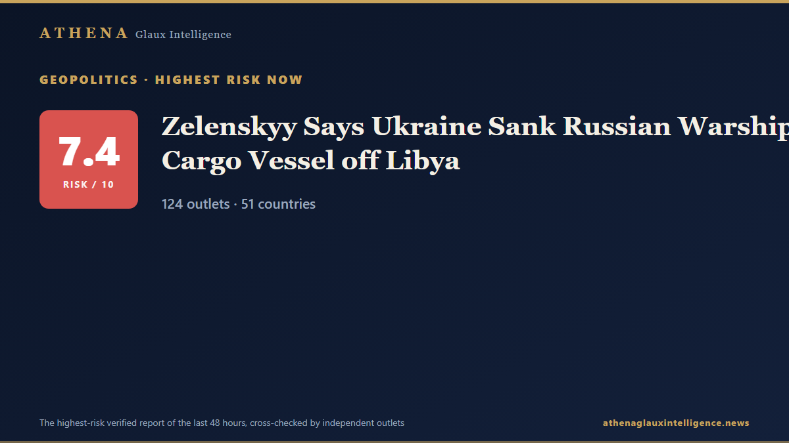
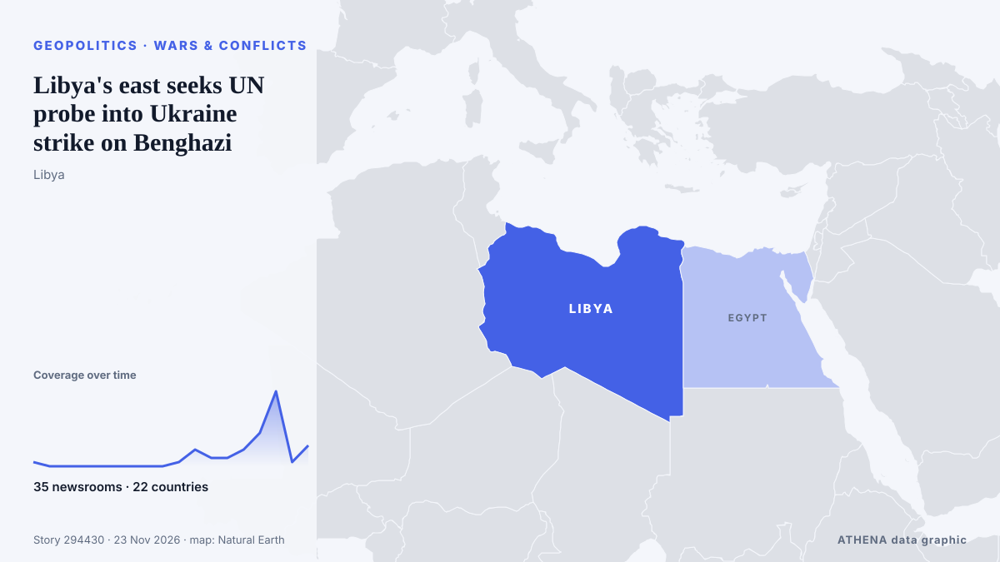

Κίνδυνος 7.4Αυξημένος
ATHENA Glaux Intelligence — Παγκόσμια ειδησεογραφική ανάλυση — κάθε αριθμός εξηγημένος
Γεωπολιτική
Όλη η Γεωπολιτική >Υψηλότερος κίνδυνος τώρα

Αυξανόμενος κίνδυνοςΑύξηση τις τελευταίες 24 ώρες
- Russia threatens ‘hostile’ Estonia with ‘open war’Κίνδυνος 0.0 → 6.5
- Russia to spend 47 billion rubles on ferries to Kaliningrad amid fears of transport blockadeΚίνδυνος 0.0 → 6.0
- Russian drone debris falls in central Kyiv, US citizen among those injuredΚίνδυνος 0.0 → 3.3
Ναυτιλία & ναυσιπλοϊα
Γραφείο Ναυτιλίας >Υψηλότερος κίνδυνος τώρα
Κίνδυνος 7.6Αυξημένος
Endurance athlete swims in Strait of Hormuz to highlight Iran war's impact on wildlife
Δείτε τα στοιχεία ›
Πίνακας παρακολούθησηςΠεράσματα, λιμάνια και άλλες ναυτιλιακές αναφορές
- Strait of HormuzΔιαταραχήattack / strike · risk 7.6 · 22 newsrooms (72 h)
- Bab el-Mandeb / Red SeaΔιαταραχήattack / strike · risk 7.4 · 126 newsrooms (72 h)
- Danish Straits / BalticΔιαταραχήattack / strike · risk 7.4 · 126 newsrooms (72 h)
Κάθε είδηση, ελεγμένη σε πολλές χώρες.
Το ATHENA Glaux παρακολουθεί 632 ειδησεογραφικά μέσα σε όλο τον κόσμο. Μια είδηση γίνεται επαληθευμένο γεγονός μόνο όταν την αναφέρουν ανεξάρτητα μέσα. Κάθε γεγονός δείχνει ποιος το ανέφερε πρώτος και έναν βαθμό κινδύνου με τους λόγους του.
1.449γεγονότα σε 24 ώρες
632μέσα που παρακολουθούμε
36λεπτά ανάμεσα στις ενημερώσεις
Σεισμός ή πλημμύρα κοντά σας αυτή την εβδομάδα;
Γράψτε την πόλη σας και δείτε σεισμούς, πλημμύρες, καταιγίδες και επίσημες προειδοποιήσεις κοντά της, με λίστα κιτ έκτακτης ανάγκης 72 ωρών. Δωρεάν, χωρίς εγγραφή, και η περιοχή σας μένει στη συσκευή σας.
Αναφορές έρχονται από ανεξάρτητα μέσα — όταν δύο συναντηθούν στην ίδια ιστορία, γίνεται επιβεβαιωμένο γεγονός.
Πώς ελέγχει το ATHENA μια είδηση
- ΣυλλογήΟι αναφορές φτάνουν από ανεξάρτητα μέσα σε πολλές χώρες.
- ΑντιστοίχισηΌταν δύο μέσα συναντιούνται στην ίδια είδηση, γίνεται επαληθευμένο γεγονός.
- ΕξήγησηΚάθε γεγονός δείχνει ποιος ήταν πρώτος, πόσο εξαπλώθηκε και γιατί ο κίνδυνος είναι αυτός.
Παγκόσμια προοπτική κινδύνου
Εβδομαδιαίες και μηνιαίες επισκοπήσεις: τα γεγονότα υψηλότερου κινδύνου, οι τάσεις ανά τομέα και περιοχή και τι να παρακολουθήσετε.
Διαβάστε την προοπτική ›Ημερήσια ενημέρωση
Τα δέκα σημαντικότερα γεγονότα της ημέρας στον κόσμο, οι αυξανόμενοι κίνδυνοι και τα νέα γεγονότα, με κάθε αριθμό εξηγημένο.
Ανοίξτε τη σημερινή ενημέρωση ›
ΓεωπολιτικήLibya's east seeks UN probe into Ukraine strike on Benghazi
Authorities in Libya's east have called for a UN investigation into claims that Ukrainian forces were present in the west before Sunday's attack in Benghazi. από The New Arab
6.2Σημασία
6.2Κίνδυνος · υψηλός
89%Βεβαιότητα
Οι τίτλοι των ειδήσεων παρουσιάζονται στα αγγλικά, όπως δημοσιεύτηκαν.
Γεωπολιτική
Ukraine sank Russian corvette Merkury off Libya: Zelenskyy
A Russian Navy guided-missile corvette – assessed to be the Project 20380 Steregushchiy-class warship Merkury – has been engulfed in flames following an explosion in the Libyan port of Benghazi… από Kyiv Post
Τεχνολογία & Κυβερνοασφάλεια
US stocks surge after last week's losses, Nvidia +33%
NEW YORK: Wall Street stocks bounced early Monday after last week’s bruising losses, with Nvidia rocketing about 33 percent higher as the artificial intelligence company reinstated Jensen Huang as… από Business Recorder
Χορηγούμενο
Cybernetics and Artificial Intelligence Lab Welcome to the Cybernetics and Artificial Intelligence Laboratory, established at the Department of Business Administration of the National and Kapodistrian University of Athens. The lab is headed by Professor Dimitrios Thomakos. The lab aims to do research that can be published in top venues. Our research uses tools and methods of Artificial Intelligence, and lies in the following areas: - Forecasting - Decision making - Cyber security - Finance We are always looking forward to collaborating with exceptional students!
Μάθετε περισσότερα – Cybernetics and Artificial Intelligence LabΠλοία στα θαλάσσια περάσματα τώρα
Ζωντανές μετρήσεις AIS. Πατήστε ή περάστε πάνω από μια μπάρα για λεπτομέρειες.
Τελευταίες αναφορές
Historic: Hungarian PM Magyar to visit Ukraine’s Transcarpathia region
Ukraine's NATO membership would be more reliable and cost-effective than separate security guarantees – Zelensky
Zelensky calls for four-way talks with Russia ‘as soon as possible’
Belgian PM De Wever sets December 31 deadline for budget talks
Virginia, Oregon sue Musk's SpaceX over Grok AI's creation of child sexual abuse images and videos
Over 450 German schools receive bomb threats
OGRA cuts petrol price by Rs3 per litre, keeps diesel unchanged
India pledges $1.6bn to Nepal in reset of ties
Τεχνολογία & Κυβερνοασφάλεια
FBI reportedly investigating apparent hack of its criminal database
The National Crime Information Center database is used by federal and local law enforcement to share information. από BBC News
Εμπόριο & Βιομηχανία
Delta system outage delays 1,300+ US flights
Shafaq News- Washington An outage in Delta Air Lines’ weight-and-balance system delayed more than 1,300 flights across the United States on Sunday, the airline said. από Shafaq News (English)
Τεχνολογία & Κυβερνοασφάλεια
Countries agree to work toward ‘killer robots’ pact
GENEVA, Nov 20 - UN talks on rules for autonomous weapons headed into overtime on Friday with some nations including Russia dragging their feet and negotiators considering a non-binding deal on arms… από The Straits Times
Γεωπολιτική, Πολιτική & Ασφάλεια
Περισσότερα ›Πόλεμοι & συγκρούσεις
Gaza turned into ‘toxic wasteland’ by Israel’s war, says new report
The new report examines the devastating environmental impacts of Israel’s attacks on the Palestinian strip. από TheJournal.ie
- Διπλωματία & σύνοδοι
India announces Rs 15,000 crore for flood-hit Nepal, PM Balendra Shah hails ties 'as firm as Himalayas'
- Πόλεμοι & συγκρούσεις
Poland confirms three objects that struck its territory were all Russian missiles
- Πόλεμοι & συγκρούσεις
Estonia to close border with Russia for at least six months
- Διπλωματία & σύνοδοι
Kenya and DR Congo agree to restore diplomatic ties after tensions over conflict
Οικονομία, Χρηματοοικονομικά & Αγορές
Περισσότερα ›Πληθωρισμός & επιτόκια
South African rand gains as commodity prices rise and dollar weakens
JOHANNESBURG: The South African rand strengthened on Monday, supported by firmer commodity prices and a weaker US dollar, which came under pressure after a Federal Reserve Governor said that the… από Business Recorder
- Κρυπτονομίσματα & ψηφιακά στοιχεία
Binance resumes withdrawals after $6bn crypto hack
- Τράπεζες & πίστη
Israeli army raids Palestinian refugee camp, launches arrest campaign in occupied West Bank
- Πληθωρισμός & επιτόκια
Final mile delivery prices climb 10.5% in Q3, GEODIS says
- Πληθωρισμός & επιτόκια
Shoppers rush to buy gold
Εμπόριο, Βιομηχανία & Υποδομές
Περισσότερα ›Αερομεταφορές, σιδηρόδρομος & οδικές
De Villiers: Ball tampering started in Durban Test
AB de Villiers has claimed Australia were tampering with the ball during the first Test of their infamous 2018 tour of South Africa. από Sky Sports
- Ναυτιλία & λιμάνια
US ports face surge in cyberattack attempts, threatening vital trade routes: Report
- Δασμοί & έλεγχοι εξαγωγών
Paedophile locked up 15 years after sexually assaulting boy
- Εμπόριο & εμπορικές συμφωνίες
Red Wings trade Dylan Larkin to Canadiens in blockbuster move
- Αερομεταφορές, σιδηρόδρομος & οδικές
HT Evening News Brief November 22: Nepal PM's visit; COP31 deadlock, India-New Zealand test and more
Ενέργεια, Πόροι & Περιβάλλον
Περισσότερα ›Κλίμα & κλιματική πολιτική
Key outcomes agreed at the UN climate talks in Antalya
The COP31 climate talks in Antalya, Turkey, have failed to reach agreement on a “pact” that lacked clear references to… από Carbon Brief
- Κλίμα & κλιματική πολιτική
Guterres demands ‘dates and dollars’ for climate adaptation as COP31 ends without consensus
- Ηλεκτρική ενέργεια
Power Supply Situation in Odesa Region Remains Difficult
- Ακραία καιρικά & φυσικές καταστροφές
Democrats win largest US House majority since 1992: media
- Κλίμα & κλιματική πολιτική
Scramble to save climate fight after COP collapse
Τεχνολογία, ΤΝ & Κυβερνοασφάλεια
Περισσότερα ›Διάστημα & δορυφόροι
NATO believes Russia is ready to launch nuclear-armed satellite, German media say
Kremlin denies German media reports, says they should not be taken seriously. από Express Tribune
- Διάστημα & δορυφόροι
European-Japanese spacecraft reaches Mercury after eight-year journey, suffers glitch
- Τεχνητή νοημοσύνη
UAE launches mira, AI assistant for government services; available from March 2027
- Τεχνητή νοημοσύνη
AI tools help brands curb Black Friday deals, from clothes to skincare
- Τεχνητή νοημοσύνη
Ethiopia and Rwanda Seek to Elevate Bilateral Partnership Through Practical Cooperation
Επιχειρήσεις, Εταιρείες & Επενδύσεις
Περισσότερα ›Συγχωνεύσεις & εξαγορές
Eni's Vår Energi to acquire ConocoPhillips' assets in Norway and UK for $2.5 bn
(ANSA) - ROME, 23 NOV - The Norwegian oil and gas producer Vår Energi—in which Eni is the majority shareholder—is set to acquire ConocoPhillips' upstream assets in Norway, along with related… από ANSA English
- Νεοφυείς & καινοτομία
Amazon Acquires Tech and Staff From AI Startup Decart
- Συγχωνεύσεις & εξαγορές
CrowdStrike to acquire Zscaler for $43.9 billion
- Εταιρική στρατηγική
Anne O'Connor to 'vigorously' challenge her 'profoundly flawed' removal as HSE CEO
- Νεοφυείς & καινοτομία
Lilly buys Huntington's startup LoQus23 for up to $725M
Δυστυχήματα & έκτακτες ανάγκες
Περισσότερα ›Δυστυχήματα & έκτακτες ανάγκες
Zanzibar Fire Damages Hotels and Shops
More than 180 tourists evacuated after a major Zanzibar fire. από News of Bahrain
- Δυστυχήματα & έκτακτες ανάγκες
Three pedestrians killed on Irish roads since Friday as man (40s) dies after being struck by car in Donegal
- Δυστυχήματα & έκτακτες ανάγκες
The 1976 Plane Crash in Greece That Killed All 50 On Board
- Δυστυχήματα & έκτακτες ανάγκες
Boy and elderly survivor pulled from rubble after Russian attack near Kyiv
- Δυστυχήματα & έκτακτες ανάγκες
SBI loses couple’s original property sale deed, asked to pay Rs 2 lakh if it fails to trace
Τρεις τρόποι να διαβάσετε σήμερα
Ξεκινήστε από αυτόν που ταιριάζει στον χρόνο σαςΕπαληθευμένα γεγονότα
Κατά σειρά έκτασης της κάλυψης
- COP31 ends in failure as countries split over fossil fuels, climate finance140 μέσα · 62 χώρεςΚίνδυνος 3.5
- Netanyahu and Eisenkot parties resume talks to form Israel government160 μέσα · 56 χώρεςΚίνδυνος 4.7
- Nvidia reinstates Jensen Huang as CEO161 μέσα · 53 χώρεςΚίνδυνος 4.6
- Ukrainian Naval Drones Sink Russian Warship in Libya112 μέσα · 43 χώρεςΚίνδυνος 6.6
- Climate deal collapses in chaotic end to COP3175 μέσα · 40 χώρεςΚίνδυνος 2.0
Γραφείο Αξιολόγησης
Κάντε μια ερώτηση και διαβάστε τεκμηριωμένη αξιολόγηση μιας βασικής είδησης, μαζί με το τι θα την διέψευδε.
Ανοίξτε το Γραφείο Αξιολόγησης ›Η σημερινή εικόνα
| 22:00 | 200 |
|---|---|
| 23:00 | 231 |
| 00:00 | 259 |
| 01:00 | 282 |
| 02:00 | 283 |
| 03:00 | 329 |
| 04:00 | 389 |
| 05:00 | 528 |
| 06:00 | 548 |
| 07:00 | 402 |
| 08:00 | 702 |
| 09:00 | 751 |
| 10:00 | 623 |
| 11:00 | 117 |
| 12:00 | 425 |
| 13:00 | 497 |
| 14:00 | 415 |
| 15:00 | 535 |
| 16:00 | 487 |
| 17:00 | 342 |
| 18:00 | 323 |
| 19:00 | 560 |
| 20:00 | 272 |
| 21:00 | 508 |
Κίνδυνος των σημερινών γεγονότων
Γεωπολιτική108Οικονομία & Αγορές50Εμπόριο & Βιομηχανία38Επιχειρήσεις36Ενέργεια & Περιβάλλον34Τεχνολογία & Κυβερνοασφάλεια34Ναυτιλία6
Αναδυόμενα σήματα
- Κίνδυνος σε άνοδο · Ενεργό τώραEuropean Commission presents latest sanctions package against Russia
- Απότομη αύξηση · Ενεργό τώραMerkury
- Απότομη αύξηση · Ενεργό τώραPMI
- Απότομη αύξηση · Ενεργό τώραUkrainian-made
- Απότομη αύξηση · Ενεργό τώραEsmaeil Baghaei
Επίσημες προειδοποιήσεις
- M 6.5 - Vanuatu regionM6.5 · USGS ·
- M 5.9 - 238 km SW of Yanglong, ChinaM5.9 · PAGER yellow · USGS ·
Μείνετε ενημερωμένοι
ATHENA Weekly Risk Picture
Οι μεγαλύτεροι γεωπολιτικοί, οικονομικοί και ναυτιλιακοί κίνδυνοι της εβδομάδας, διασταυρωμένοι και βαθμολογημένοι.
Κάθε Παρασκευή στις 08:00 ώρα Ελλάδας · δωρεάν · στα αγγλικά
Δωρεάν εγγραφήΤο ATHENA στο Telegram
Οι ειδήσεις τη στιγμή που δημοσιεύονται: έκτακτα γεγονότα με κίνδυνο 6 ή περισσότερο, ωριαία σύνοψη, ενημερώσεις κινδύνου και η ημερήσια ενημέρωση στις 10:00.
Δωρεάν · αναρτήσεις στα αγγλικά · αποχωρείτε όποτε θέλετε
Είσοδος στο κανάλιΤην εγγραφή τη διαχειρίζεται η beehiiv με διπλή επιβεβαίωση: τίποτα από όσα πληκτρολογείτε δεν αποστέλλεται στο ATHENA, και κάθε τεύχος έχει σύνδεσμο διαγραφής.
Παρακολούθηση κινδύνων
Περισσότερα ›Στενά του ΟρμούζΚίνδυνος 7.610 νέα αυτή την εβδομάδα · μείωση από 39 την προηγούμενη εβδομάδαΕρυθρά ΘάλασσαΚίνδυνος 6.929 νέα αυτή την εβδομάδα · μείωση από 46 την προηγούμενη εβδομάδαΕλληνοτουρκικάΚίνδυνος 3.55 νέα αυτή την εβδομάδα · μείωση από 9 την προηγούμενη εβδομάδαΚύπροςΚίνδυνος 5.013 νέα αυτή την εβδομάδα · μείωση από 17 την προηγούμενη εβδομάδαΚυρώσεις κατά της ΡωσίαςΚίνδυνος 3.612 νέα αυτή την εβδομάδα · μείωση από 16 την προηγούμενη εβδομάδαΠόλεμος στην ΟυκρανίαΚίνδυνος 7.8214 νέα αυτή την εβδομάδα · μείωση από 284 την προηγούμενη εβδομάδαΜέση Ανατολή: Ισραήλ – ΓάζαΚίνδυνος 7.068 νέα αυτή την εβδομάδα · μείωση από 86 την προηγούμενη εβδομάδαΤαϊβάνΚίνδυνος 1.59 νέα αυτή την εβδομάδα · μείωση από 19 την προηγούμενη εβδομάδαΠετρέλαιο και φυσικό αέριοΚίνδυνος 2.928 νέα αυτή την εβδομάδα · μείωση από 51 την προηγούμενη εβδομάδαΔιώρυγα του ΣουέζΚίνδυνος 0.00 νέα αυτή την εβδομάδα · μείωση από 3 την προηγούμενη εβδομάδαΣτενά του ΒοσπόρουΚίνδυνος 0.00 νέα αυτή την εβδομάδαΔιώρυγα του ΠαναμάΚίνδυνος 0.00 νέα αυτή την εβδομάδαΣκιώδης στόλοςΚίνδυνος 0.01 νέα αυτή την εβδομάδα · μείωση από 4 την προηγούμενη εβδομάδαΝαυσιπλοΐα στη Μαύρη ΘάλασσαΚίνδυνος 0.02 νέα αυτή την εβδομάδα · μείωση από 5 την προηγούμενη εβδομάδαΚεντρικές τράπεζες και επιτόκιαΚίνδυνος 4.142 νέα αυτή την εβδομάδα · περίπου όσα και την προηγούμενη εβδομάδαΕλληνική οικονομίαΚίνδυνος 2.87 νέα αυτή την εβδομάδα · μείωση από 9 την προηγούμενη εβδομάδαΕνέργεια στην Ανατολική ΜεσόγειοΚίνδυνος 0.01 νέα αυτή την εβδομάδα · μείωση από 5 την προηγούμενη εβδομάδαΒαλκάνιαΚίνδυνος 3.014 νέα αυτή την εβδομάδα · μείωση από 25 την προηγούμενη εβδομάδαΜεταναστευτικό στη ΜεσόγειοΚίνδυνος 0.01 νέα αυτή την εβδομάδα · μείωση από 3 την προηγούμενη εβδομάδα
Παγκόσμιοι κίνδυνοι — εβδομάδα 48, 2026 (23–29 Νοε) ›
Ανά τον κόσμο
Νοτιοανατολική ΑσίαVietnam Embassy celebrates Vietnamese Culture Day in Phnom Penh
58 γεγονότα
Μέση Ανατολή & Βόρεια ΑφρικήFire at power station in Iraq's Basra kills at least 4, injures 35
58 γεγονότα
Βόρεια ΑμερικήNvidia reinstates Jensen Huang as CEO
54 γεγονότα
Νότια ΑσίαIndonesia searches for 34 missing workers after candy factory fire
53 γεγονότα
Υποσαχάρια ΑφρικήCOP31 ends in failure as countries split over fossil fuels, climate finance
43 γεγονότα
Ανατολική ΑσίαLee names new FM, 3 other ministers, spy chief
42 γεγονότα
Ρωσία & ΕυρασίαEstonia to close border with Russia for at least six months
41 γεγονότα
ΩκεανίαPM Wong to visit Australia from Nov. 23-25, meet Australian PM Albanese
36 γεγονότα
Λατινική Αμερική & ΚαραϊβικήHouthis claim attack on Saudi oil refinery
25 γεγονότα